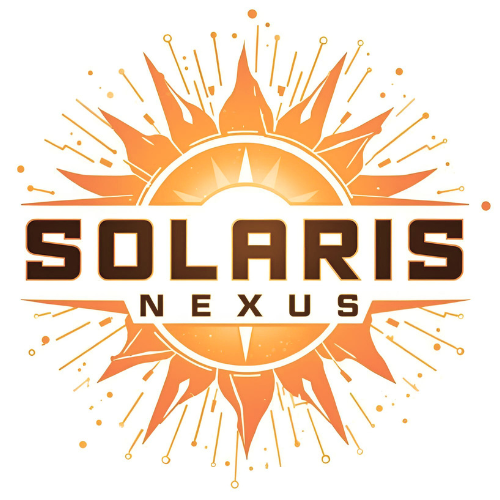
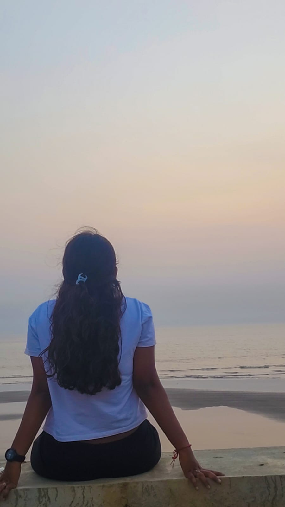
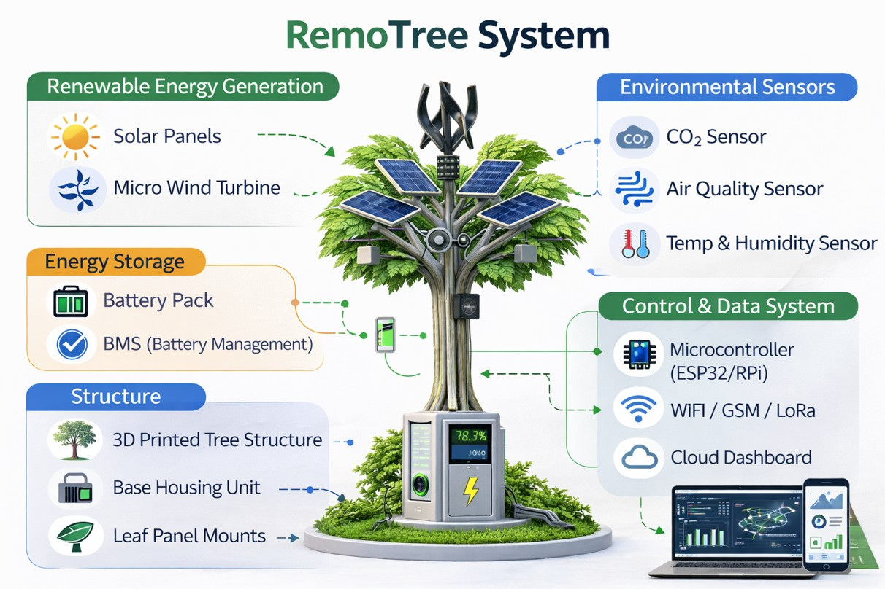
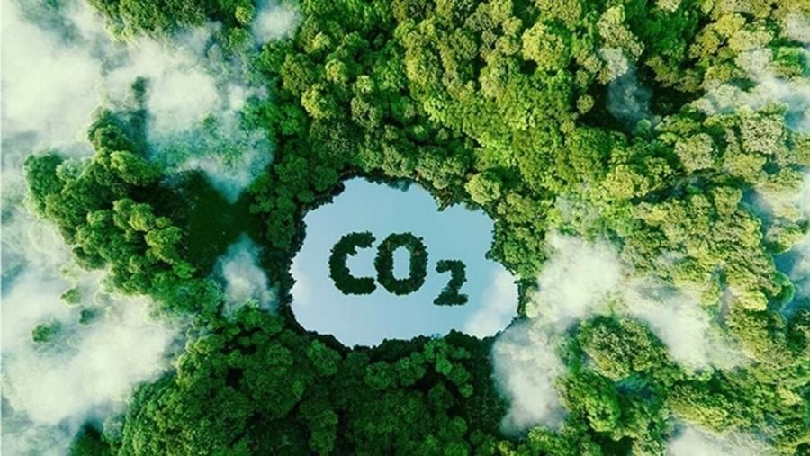
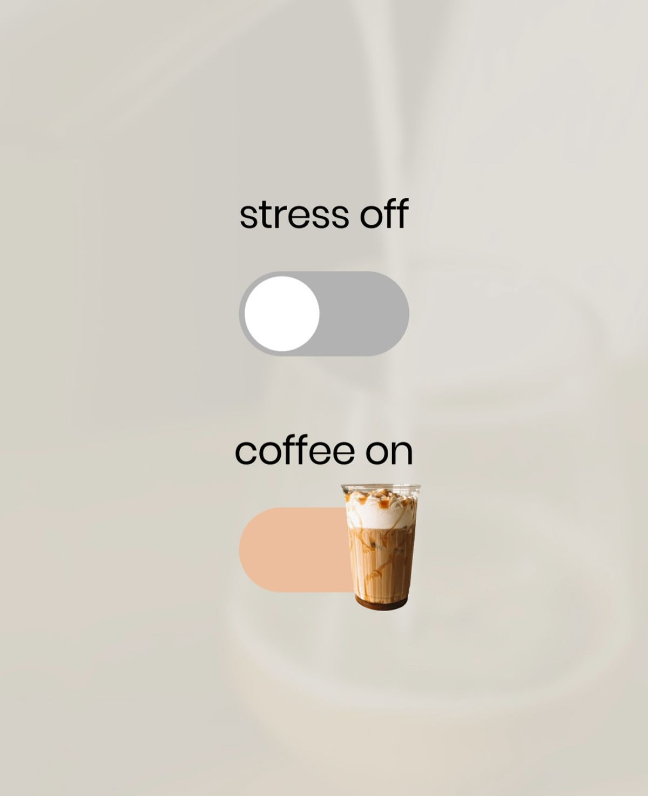
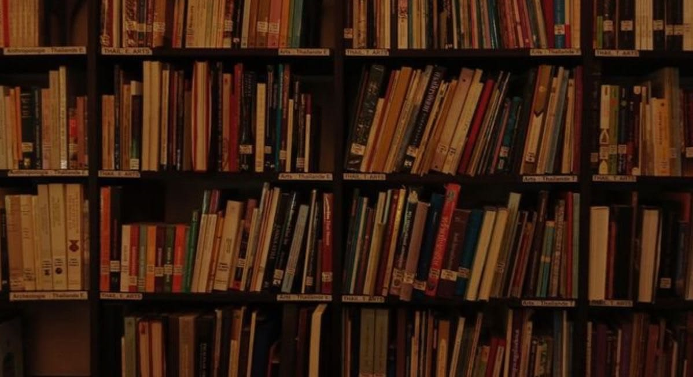

In ProgressSolaris Nexus
Exploring interactive visuals, layout systems, and micro-interactions.
Here's a wanderer of dreams, a girl sometimes buried deep in the pages of her books or writing the stories of her own. Now cast as a student of Computer Science and Engineering. Welp, the world of stories is now replaced by the world of repositories. Surf down to be the audience of this little creature on earth.
Notes are the quiet echoes of a loud mind.
Like a notebook filled over time — from front-page notes to back-page recommendations — everything I learn, think, and return to lives here.
Step inside.
Open Notes →FROM THE BLOG
Not all ideas become projects.

In ProgressExploring interactive visuals, layout systems, and micro-interactions.

LiveA personal showcase designed with a dark, immersive cosmic theme.

ConceptSmall practice utilities demonstrating problem solving and logic.

ConceptStructured UI for tracking and reasoning about carbon-offset workflows.

In ProgressWarm layout and depth for a small cafe presence on the web.

ArchiveSerif-forward reading space for notes, quotes, and slow browsing.
Secured 1st place in an essay writing competition, earning a prize of ₹50,000. A defining moment that shaped my confidence and voice as a writer.
Began exploring how chatbots work — diving into the logic behind conversations and building a foundation in how machines interpret and respond.
Building a strong foundation in algorithms, data structures, and software engineering while learning how ideas transform into real systems.
Worked on projects combining electronics and programming, exploring how software interacts with the physical world through sensors and intelligent systems.
Selected for the CaseQuest competition at IIT Roorkee, gaining exposure to real-world problem solving, innovation, and collaborative thinking.
Designing and building interactive web experiences, moving from static pages to dynamic, expressive interfaces that reflect both logic and creativity.
Aiming to grow as a developer who blends engineering with creativity — building scalable applications while continuing to explore writing, design, and intelligent systems.